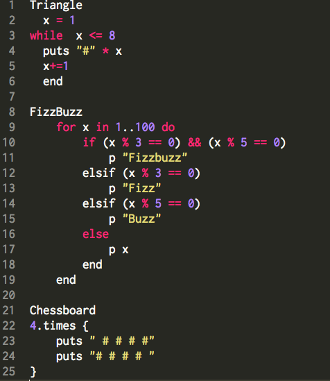
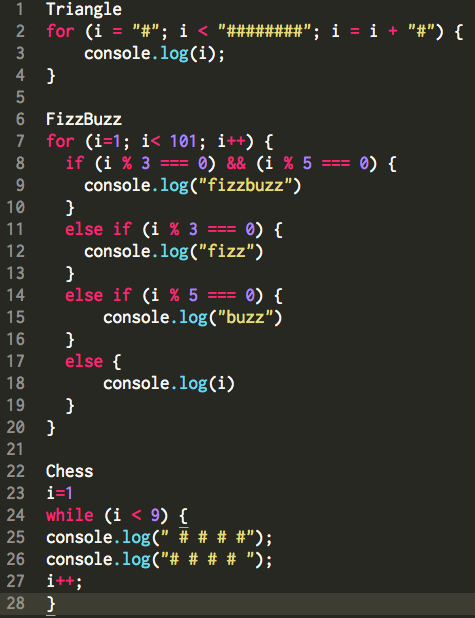

Ruby Loops vs. Javascript Loops
Week 7
Ruby Loops
Something familiar with what we have been working on our journey at DBC is ruby loops. Ruby's simple set up for loops are shown in the example below. First we have the common while loop which is similar to javascript besides the semicolons and blocks to set up the argument. While loop is set up by establishing a counter, in this case "i", then while Second is the for loop. This is not as frequently as used, but setting up the method is very intuative. This method is very similar to our #times method used. We establish the loop by "for" followed by "i" our counter variable, "in" a ruby function which helps establish a parameter of counter variable to our last function "range". The range in this case would be number set from 1 to 100. Our last loop is the #times. This method take a number value and repeats the argument the number of times the function is called for.
while Loop
counter = (a number)
while (argument)
something looped
counting loop
end
for Loop
for (counter variable) in (range)
something looped
end
times Loop
(number or variable with a numberical value).times {block}
or
(number or variable with a numberical value).times do |counter variable|
something looped
end

Javascript LoopsFirst off, there is no times loop established in javascript like in Ruby. So I can go over for and while loops in javascript. The for loop is very easy to follow in javascript. It requires "for", followed by (counter starting value; counter max value; counting loop). Unlike ruby, javascript uses alot of {} and semicolons to end lines. So instead of "end" found in ruby many of javascript arguments are put into curly brackets. Aside from that, while loops are exactly the same besides the requirement of semicolons and curly brackets.
while Loop
counter = (a number) {
while (argument) {
something looped;
counting loop; }
}
for Loop
for (counter = starting number value; counter <= max value; counting loop) {
something looped;
}

Please let me know if the terms are incorrect or this confuses you.